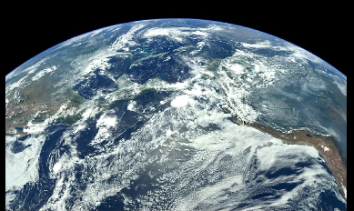

“Population - Can We Begin to Talk Sensibly?” by Prof Aubrey Manning. I was stunned, at around 22 mins into the video, when the professor pointed out what I thought was cloud is actually smoke from forest-clearing fire (in the right hand side of the picture).